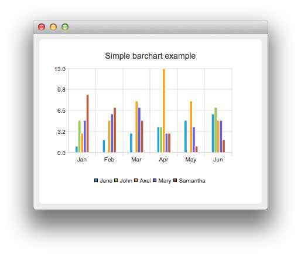

QBarSeries Class
The QBarSeries class presents a series of data as vertical bars grouped by category. More...
| Header: | #include <QBarSeries> |
| Instantiated By: | BarSeries |
| Inherits: | QAbstractBarSeries |
Public Functions
| QBarSeries(QObject *parent = nullptr) | |
| virtual | ~QBarSeries() |
Reimplemented Public Functions
| virtual QAbstractSeries::SeriesType | type() const override |
Detailed Description
This class draws data as a series of vertical bars grouped by category, with one bar per category from each bar set added to the series.
See the bar chart example to learn how to create a grouped bar chart.

See also QBarSet, QPercentBarSeries, QAbstractBarSeries, and QStackedBarSeries.
Member Function Documentation
[explicit] QBarSeries::QBarSeries(QObject *parent = nullptr)
Constructs an empty bar series that is a QObject and a child of parent.
[virtual noexcept] QBarSeries::~QBarSeries()
Removes the bar series from the chart.
[override virtual] QAbstractSeries::SeriesType QBarSeries::type() const
Reimplements an access function for property: QAbstractSeries::type.
Returns the bar series.